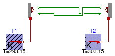

This package contains examples for the use of models that can be found in Buildings.HeatTransfer.Radiosity.
Extends from Modelica.Icons.ExamplesPackage (Icon for packages containing runnable examples).
| Name | Description |
|---|---|
| Test model for indoor source as an opaque surface | |
| Test model for outdoor radiosity |
 Buildings.HeatTransfer.Radiosity.Examples.OpaqueSurface
Buildings.HeatTransfer.Radiosity.Examples.OpaqueSurface
model OpaqueSurface "Test model for indoor source as an opaque surface" import Buildings; extends Modelica.Icons.Example;Buildings.HeatTransfer.Sources.FixedTemperature T2(T=303.15); Buildings.HeatTransfer.Radiosity.OpaqueSurface bod1( absIR=0.3, A=1); Buildings.HeatTransfer.Sources.FixedTemperature T1(T=293.15); Buildings.HeatTransfer.Radiosity.OpaqueSurface bod2( absIR=0.3, A=1); equationconnect(T1.port, bod1.heatPort); connect(T2.port, bod2.heatPort); connect(bod1.JOut, bod2.JIn); connect(bod2.JOut, bod1.JIn); end OpaqueSurface;
Buildings.HeatTransfer.Radiosity.Examples.OutdoorRadiosity
| Type | Name | Default | Description |
|---|---|---|---|
| Area | A | 1 | Area of receiving surface [m2] |
model OutdoorRadiosity "Test model for outdoor radiosity" import Buildings; extends Modelica.Icons.Example;Buildings.HeatTransfer.Radiosity.OpaqueSurface sur(A=A, absIR=1) "Receiving surface"; Buildings.HeatTransfer.Radiosity.OutdoorRadiosity outRad(A=A, vieFacSky=0.5) "Outdoor radiosity model"; parameter Modelica.SIunits.Area A=1 "Area of receiving surface";Modelica.Blocks.Sources.Ramp TSky( duration=1, height=30, offset=273.15) "Sky blackbody temperature"; Modelica.Blocks.Sources.Constant TAir(k=273.15 + 20) "Outside air temperature"; equationconnect(outRad.JOut, sur.JIn); connect(TAir.y, outRad.TBlaSky); connect(TSky.y, outRad.TOut); end OutdoorRadiosity;